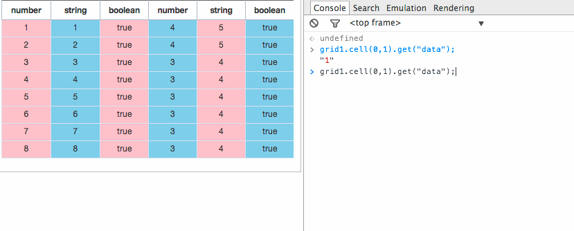

.get()/.set() API
W5 Grid에서 기본적인 조작은 .get()/.set() API 통해 할 수 있습니다.
API 형태
W5 Grid의 API 형태는 이렇게 생겼습니다.
grid.
col("name").get("data");
col()-
get(), set() API 호출 전 cell, row, col, table에 해당하는 cell들을 method로 선택한다.
이를 W5 Grid parts select method(!어감확인 필!)라고 부른다. get()- 원하는 Data 또는 Property를 get() 또는 set()
간단한 예제들을 모아보면 이렇습니다.
// 4행의 price란 key를 가진 column에 해당되는 cell을 bold체로 바꿉니다.
grid.cell(3, "price").set("style", "font-weight" "bold");
// name이란 key를 가진 column을 width를 200px로 지정합니다.
grid.col("name").set("width", "200px");
// 6번 행에 해당되는 셀들의 배경색을 red로 지정합니다.
grid.row(5).set("style", "background", "red");
// 전체 셀들의 data를 -로 지정합니다.
grid.table().set("data", "-");
W5 Grid parts select method
Grid parts란 W5 Grid를 구성하는 요소들입니다. 이 요소들은 cell, col, row, table로 구성되어 있고 W5 Grid에서는 이를 핸들링하기 수월하게 select method로 제공합니다. select method의 형태는
- index는 0 부터 시작합니다.
- cell( row index, col index | colModel id)
- row( row index )
- col( col index | colModel id )
- table()
이렇습니다. col 와 row, table은 해당하는 영역의 cell들의 집합입니다. 그렇기에 col과 row, table은 cell(row, col) method로도 표현할 수 있습니다.
매개 변수로 *을 입력하면 해당하는 셀들을 다 선택하게 되며 cell(" * ", col index)는 row를, cell(row index, " * ") 은 col을 한 것과 같습니다. 또한 모든 매개 변수룰 *로 입력하여 모든 cell을 선택하면 table을 선택한 것과 같습니다.
grid.cell(8, "*")...; // grid.row(8);과 같습니다.
grid.cell("*", 3)...; // grid.col(3);과 같습니다.
grid.cell("*", "*")...; // grid.table();과 같습니다.
.get(), .set()에 첫번째 인자로 사용할 수 있는 property와 접근 가능 parts
| Property | Parameter type | Return type | 설명 | 접근 가능한 W5 Grid Parts | |||
|---|---|---|---|---|---|---|---|
| cell | col | row | table | ||||
| displayType |
text
select
checkbox
radio
link
img
button
custom
|
string
|
해당 parts의 데이터를 화면에 표시하기 위한 유형을 설정 | O | O | O | O |
| data | string | (Array|Object) |
|
해당 parts의 data. | O | O | O | O |
| class | string
|
string
|
해당 parts의 css class. | O | O | O | O |
| style | string|Object
|
string|Object
|
해당 parts의 style. | O | O | O | O |
| width | string|number
|
number
|
해당 parts의 width. | O | O | ||
.option() method
colOrder, frozen column과 같은 Grid의 설정을 get(), set() 하려면 option() method를 통해 접근합니다.
grid.option().set("frozenColumn", 3); // 3번째 행까지 고정 column 으로 지정합니다.
첫번째 인자에 해당하는 Property들은 Create W5 Grid에서 설명한 option들과 일치하니 문서를 참고하세요.
Chaining
W5 Grid는 Chaining이 가능합니다. W5 Grid Parts select method로 해당 요소들을 지정하고 연속으로 set()을 할 수 있습니다. get()은 값을 리턴하고 체인이 끊깁니다.
체이닝을 사용하면 다음과 같은 형태의 코드를 작성할 수 있습니다.
grid.col("price") // column id가 "price"인 column들의 셀에
.set("style", "background", "red") // 배경색을 red로 지정하고
.set("displayType", "text") // displayType을 text로 바꾸고
.set("class", "font-white"); // font-white란 css class를 지정합니다.
.get()
선택한 Grid parts에 대한 property의 값을 얻고 싶을 경우 사용합니다.
data
선택한 Grid parts의 data는
// column key가 "name"인 column의 데이터를 얻습니다.
grid.col("name").get("data");
와 같은 코드로 얻을 수 있습니다.
리턴되는 값의 타입은 Grid Parts select Method에 따라 다음과 같이 정해집니다.
| W5 Grid Parts select method | Return type |
|---|---|
| cell일 경우 | string
|
| col일 경우 | Array
|
| row일 경우 |
|
| table일 경우 | Object Array
|
Data에 대한 get()의 더 자세한 사항은 Process Data 문서를 참조하세요.
option { type : "array" }
선택한 grid parts가 row일 경우 object 형태가 아닌 array 형태가 필요할 경우에는
// 2번째 row의 data를 array 형로 가지고 옵니다.
grid.row(1).get("data", { type : "array" });
와 같이 마지막 인자를 object로 type을 array로 주면 됩니다.
브라우저 Console에서 확인한 모습

Style
선택한 W5 Grid parts의 Style에 대한 정보를 얻습니다. Style Property에 대한 .get() 형태는 두가지가 있습니다.
// colModel ID가 "name"인 column의 모든 style을 얻습니다.
grid.col("name").get("style");
// colModel ID가 "name"인 column의 background 값을 얻습니다.
grid.col("name").get("style", "background");
첫 번째 처럼 .get("style")을 하게 되면 선택한 W5 Grid parts의 셀들에 적용된 style 객체를 얻어 return은 object 형태가 됩니다. 두 번째 처럼 .get("style", property)를 하게 되면 property에
대한 style 값만 가지고 오게 됩니다. 그렇기에 return은 string 형태가 됩니다.
class
선택한 W5 Grid parts에 적용된 CSS Class를 얻습니다.
// colModel ID가 "name"인 column의 CSS Class를 얻습니다.
grid.col("name").get("class");
return 값은 stirng이며 여러 class가 적용되었을 경우에는 화이트 스페이스로 구분됩니다.
.set()
선택한 Grid parts에 대한 property의 값을 지정하고 싶을 경우 사용합니다.
data
선택한 Grid parts의 data 값을 설정합니다.
var data = [1,2,3,4,5,6,7];
grid.col("name").set("data", data );
각 Grid parts당 set할 수 있는 데이터 형태는 다음과 같습니다.
| W5 Grid Parts select method | Data type |
|---|---|
| cell일 경우 | string
|
| col일 경우 | Array
|
| row일 경우 | Object | Array
|
| table일 경우 | Object Array
|
Style
선택된 W5 Grid parts의 Style을 지정할 경우 API 형태는 다음과 같습니다.
grid.
col("name").set("style",property,value);
grid.col("name").set("style",object);
W5 Grid는 Style을 Object로 관리하기 에 첫번째와 같이 key를 직접 명시하는 방법과 두번쨰와 같이 object를 한번에설정할 수 있습니다.
Style은 다른 W5 Grid parts select method로 겹치는 cell에 대하여 같은 property에 여러번 set이 되면 가장 최근에 set한 값으로 적용이 되어 W5 Grid를 꾸미기에 더욱 편리합니다. 더 자세한 사항은 Style concept 문서를
참고하세요.
class
선택된 W5 Grid parts의 CSS class를 지정합니다.
grid.
col("name").get("class",string);
지정할 CSS Class를 단일값 이외에 여러가지 값을 한번에 주고 싶을 경우에는 화이트 스페이스로 구분지어 지정합니다.
grid.col(2).set("class", "bg-yellow f-bold");
option { silent : true | false }
화면에 바로 갱신할지의 여부를 지정합니다. true면 .set() 속성들이 화면에 반영이 되지 않습니다. 기본값(default)는 'false'입니다.
// 그리드 전체 셀을 bold체로 지정하지만 화면에 즉시 반영은 하지 않습니다.
grid.table().set("style", "font-weight", "bold", { silent : true });
직접 해보세요! .get("data"), .set("data")
See the Pen W5Grid - [Basic] Example for get("data"), set("data") API by w5 (@w5) on CodePen.
직접 해보세요! .get("style"), .set("style")
See the Pen W5Grid - [Basic] Example for get("style"), set("style") API by w5 (@w5) on CodePen.
직접 해보세요! .get("class"), .set("class")
See the Pen W5Grid - [Basic] Example for get("class"), set("class") API by w5 (@w5) on CodePen.